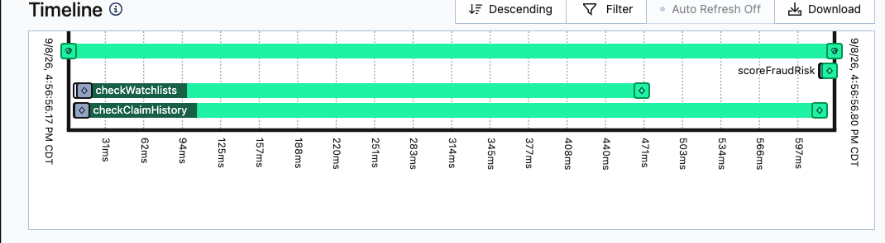

Shamrock Trading Corporation is a world-leading provider of transportation, financial and technology services, helping businesses move freight, improve cash flow and streamline operations.
Not "here is a finished spec, build it." A genuinely rough, one-paragraph idea.
Write the rough idea
Ask AI to turn it into a real spec
Hand that spec to a coding agent & build it
None of this makes the prompt bad.
Because "what should a good Temporal spec contain" is itself a question worth delegating — the model already knows the shape of retries, signals, queries, sagas, especially with a Temporal skill loaded for grounding.
"Would this be good for a coding-agent prompt?" — the answer covered architecture, failure modes, and UI/UX explicitly.
Temporal AI skill: github.com/temporalio/skill-temporal-developer
Temporal TS SDK · local dev server · NestJS API + worker · React + TS UI · Docker Compose · separate workflow / activity / client / API / UI layers
retry policies per activity · at least one timer · a child workflow · signals for every human action · queries for state/progress · cancellation handling · failure recovery path
9 named stages from submission to payout — not "any cool ideas," a concrete process to map onto primitives
README, unit tests, one integration test that signals a real workflow to completion, build/lint/test must pass before calling it finished
Polls the API and keeps only preferences + recent workflow IDs in localStorage.
REST facade that starts workflows, sends signals, and runs workflow queries.
Event history, task queues, timers, visibility, and the authoritative claim state.
Runs deterministic workflow code and side-effecting activity implementations.
Every chip on this rail is a query result, live, from a running Temporal workflow — not a hand-maintained progress bar.
src/ ├── pages/ │ ├── DashboardPage.tsx │ └── ClaimDetailPage.tsx ├── components/ │ ├── StageTimeline.tsx │ ├── ActionPanel.tsx │ ├── SimulationPanel.tsx │ └── …10 more ├── hooks/ │ ├── usePolling.ts │ └── usePreferences.tsx └── lib/ ├── api.ts └── storage.ts
src/ ├── claims/ │ ├── claims.controller.ts │ ├── claims.service.ts │ ├── temporal.mappers.ts │ └── dto.ts ├── temporal/ │ └── temporal.service.ts ├── system/ │ └── system.controller.ts └── main.ts
src/ ├── workflows/ │ ├── claim.workflow.ts │ └── fraud-check.workflow.ts ├── activities/ │ ├── claim/ │ │ ├── validate-claim.ts │ │ ├── process-payment.ts │ │ └── …8 more │ ├── fraud/ │ │ ├── check-watchlists.ts │ │ └── score-fraud-risk.ts │ └── simulation.ts ├── temporal/ │ └── temporal-worker.service.ts └── admin/ └── admin.controller.ts
Plus packages/shared — request/response types, stage definitions and
progress math every package imports, none of them redefine.
const { checkClaimHistory, checkWatchlists, scoreFraudRisk } = proxyActivities<typeof activities>({ ...retryPolicy }); export async function fraudCheckWorkflow(input: ClaimInput) { const [history, watchlist] = await Promise.all([ checkClaimHistory(input), checkWatchlists(input), ]); return await scoreFraudRisk(input.claimId, [...history, ...watchlist]); }

No custom logging, no tracing setup, no dashboard to build — every activity call at the top shows up as a bar at the bottom the moment it runs.
per-stage, configurable backoff
permanent errors stop cleanly
settlement hold + reminder loop
fraud check, own history
approve / deny / info / recover
live state + progress %
adjuster notes, rejected inline
saga-style compensation
find claims by status/type/score
kill it mid-claim, resume
cancellable long-running activity
Temporal is the only state store
What activities can fail transiently? What's permanent? What must be non-retryable?
What waits on a human? For how long? What happens if nobody answers?
What must survive a crash? Who is the source of truth — your DB, or the workflow history?
Where does UI end and API begin? Where does API end and worker begin?
Answer these four categories before you design the system, and your Temporal model gets much easier to see.
Full source, README, tests — github.com/simy307/temporal-claims-demo
docs.temporal.io · TypeScript SDK samples
Temporal Slack · community forum · local meetups
Previous slide — steal it, adapt it, use it on your own use case